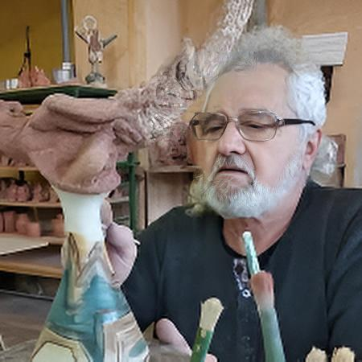
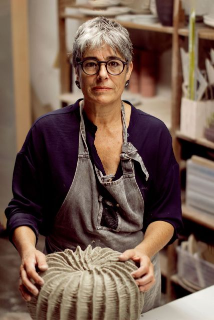
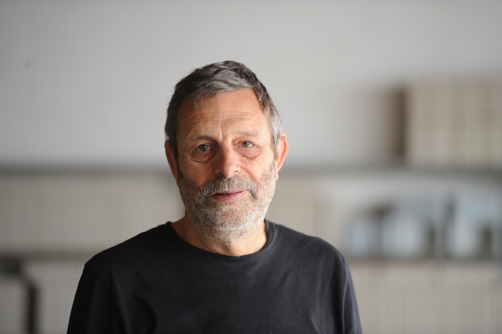

Enric Orobitg Clua
"L'evolució del Silló: de l'ús diari a la peça d'art"
Un dels últims mestres terrissaires en actiu de Verdú. Orobitg representa la tradició més pura del "silló".

"L'evolució del Silló: de l'ús diari a la peça d'art"
Un dels últims mestres terrissaires en actiu de Verdú. Orobitg representa la tradició més pura del "silló".

"Formes i ombres: Ceràmica contemporània a Ponent"
Artista ceramista que explora el minimalisme i la unió entre el disseny modern i el fang.

"La ceràmica en l'arquitectura del segle XXI"
Mestre ceramista especialista en la integració de la ceràmica en l'arquitectura i el patrimoni.